À propos d'ADAZ RENOV
Une entreprise de rénovation dirigée sur le terrain
ADAZ RENOV rassemble une direction proche des chantiers, une equipe qualifiee et une methode de travail claire pour accompagner vos projets avec exigence.
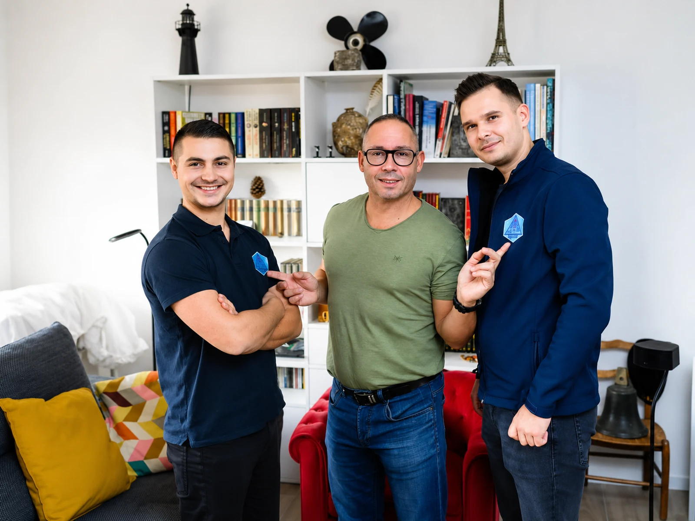
Notre histoire
Des chantiers suivis avec précision, du premier rendez-vous à la livraison
ADAZ RENOV a ete construite autour d'une idee simple : proposer une renovation serieuse, lisible et soignee. Chaque projet commence par une ecoute attentive, puis avance avec une organisation concrete, des choix techniques justifies et un suivi regulier.
Notre equipe intervient sur la renovation interieure, les salles de bain, les menuiseries, l'electricite, les finitions et les amenagements exterieurs. Le meme niveau d'exigence est applique aux petits travaux comme aux transformations completes.
- ✓Suivi direct
Une direction presente sur les decisions importantes du chantier. - ✓Travail propre
Des interventions organisees pour limiter l'imprevu et garder un chantier lisible. - ✓Resultat durable
Des materiaux et finitions choisis pour tenir dans le temps.
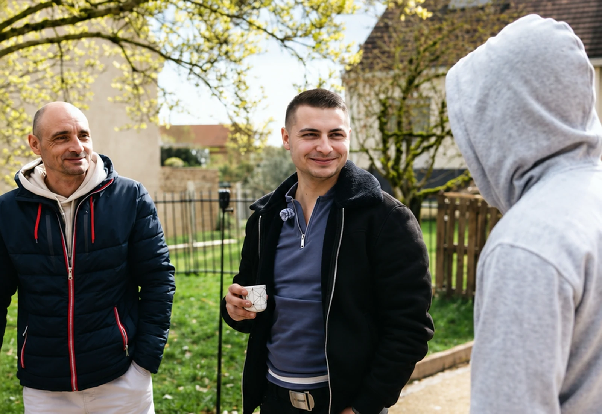
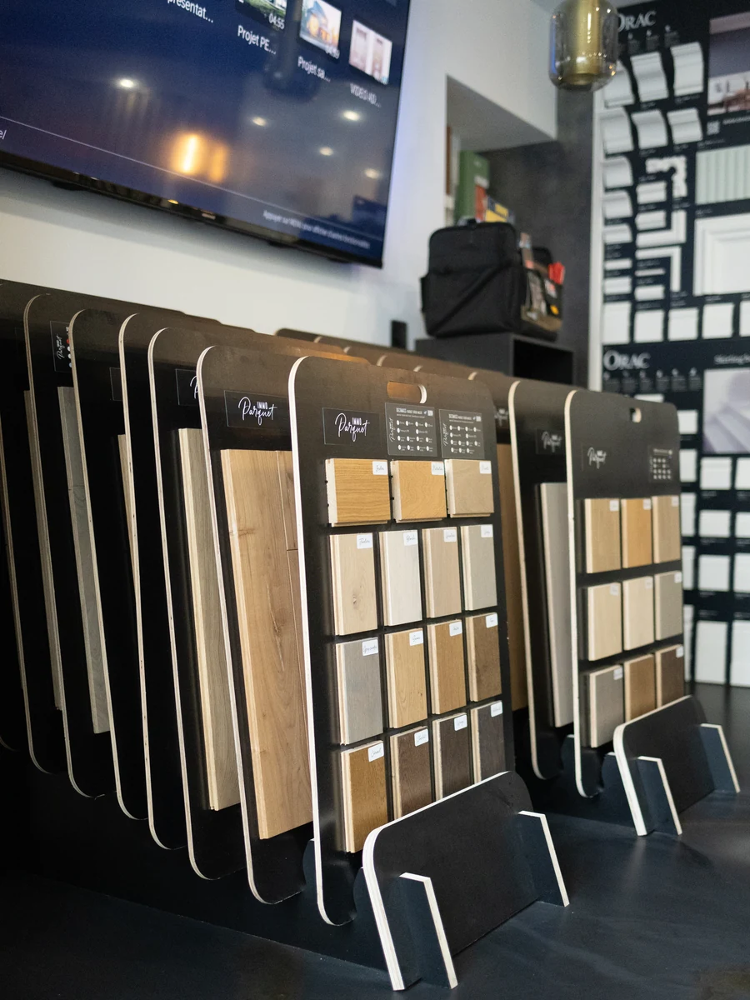
Direction
Anatolie ZARA et Daniel ARSENIE, deux regards complémentaires
Une direction proche du client et proche du chantier, pour garder le cap sur la qualite, les delais et les details qui font la difference.
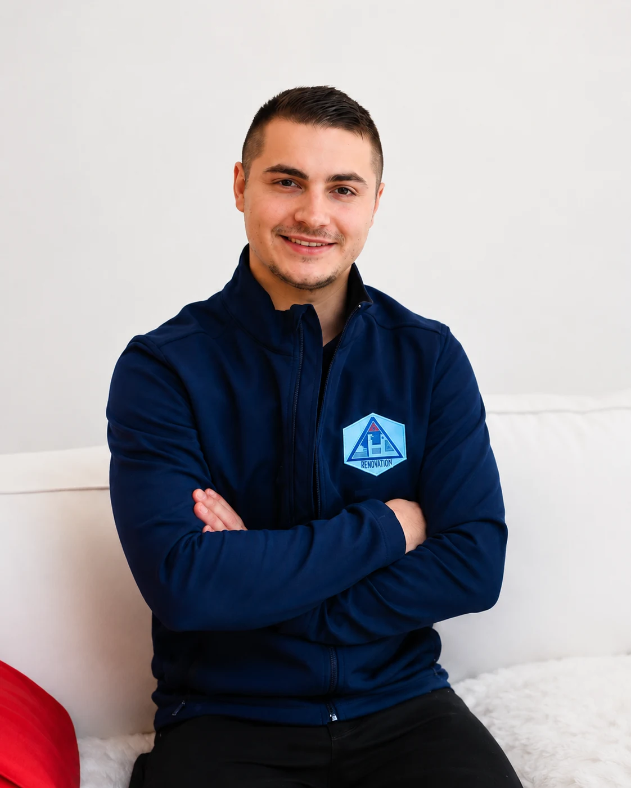
Directeur général
Anatolie ZARA
Anatolie apporte une vision terrain, une attention forte aux finitions et une presence concrete dans l'organisation des interventions.
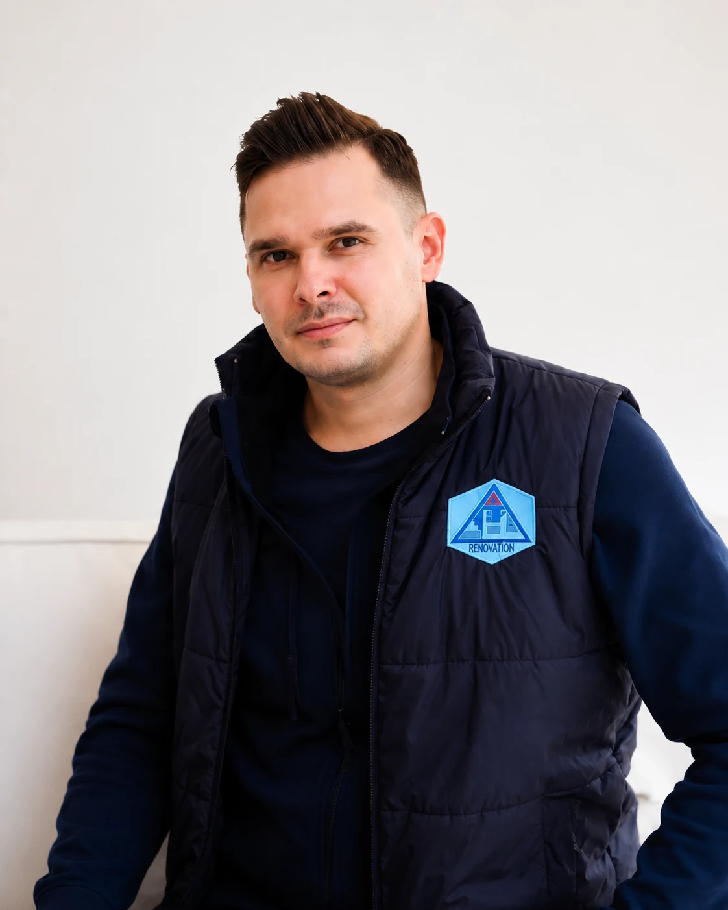
Directeur général
Daniel ARSENIE
Daniel coordonne la relation client, les arbitrages techniques et la clarte du projet, pour que chaque etape reste lisible.
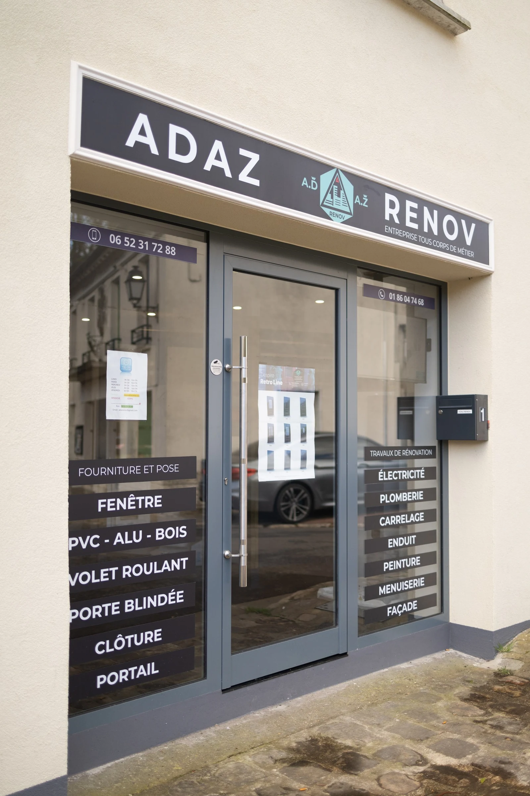
Notre bureau
Un espace pour accueillir, conseiller et choisir les bons matériaux
Notre bureau est pense comme un lieu de travail et de conseil : on y discute les projets, les contraintes techniques, les finitions et les choix de materiaux avant le passage sur chantier.
Les clients peuvent y mieux visualiser les solutions proposees et comprendre les choix qui rendent une renovation plus propre, plus durable et plus coherente.
Sur le terrain
Une équipe visible, organisée et impliquée
Quelques moments de chantier, de coordination et de relation client.
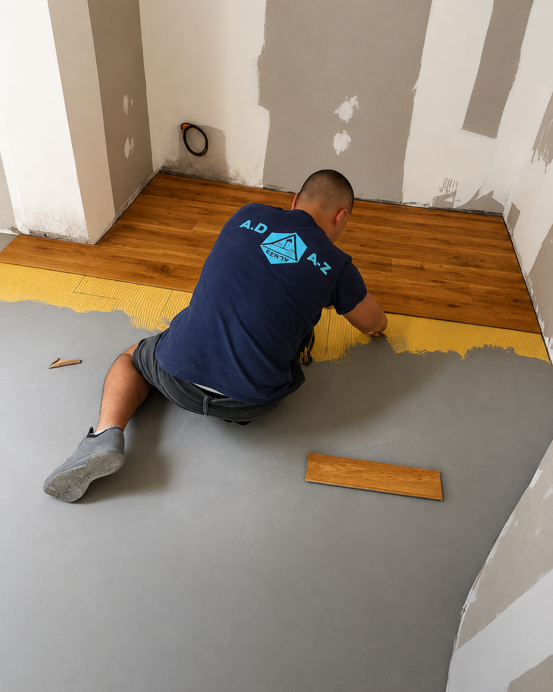
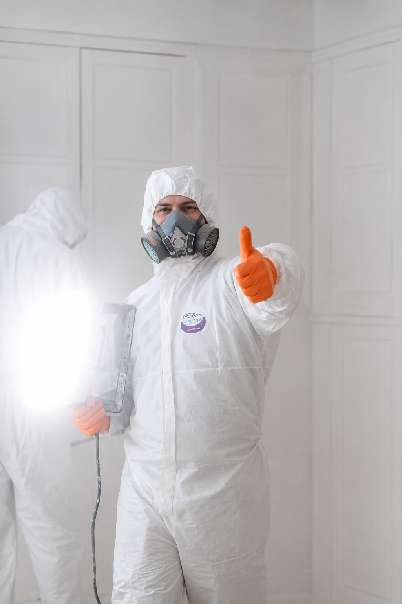
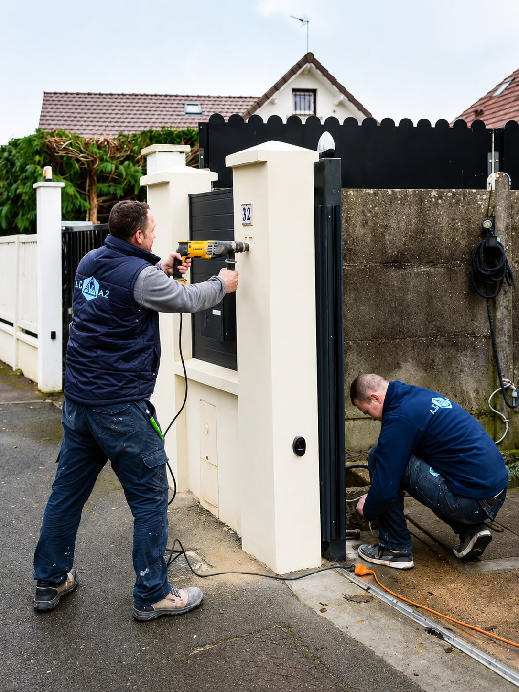
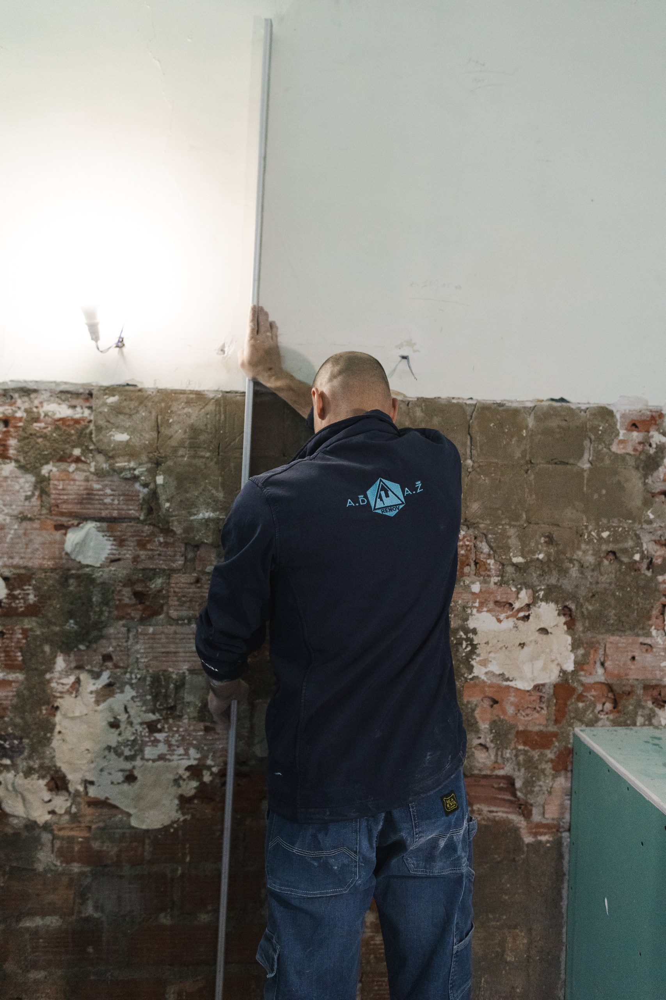
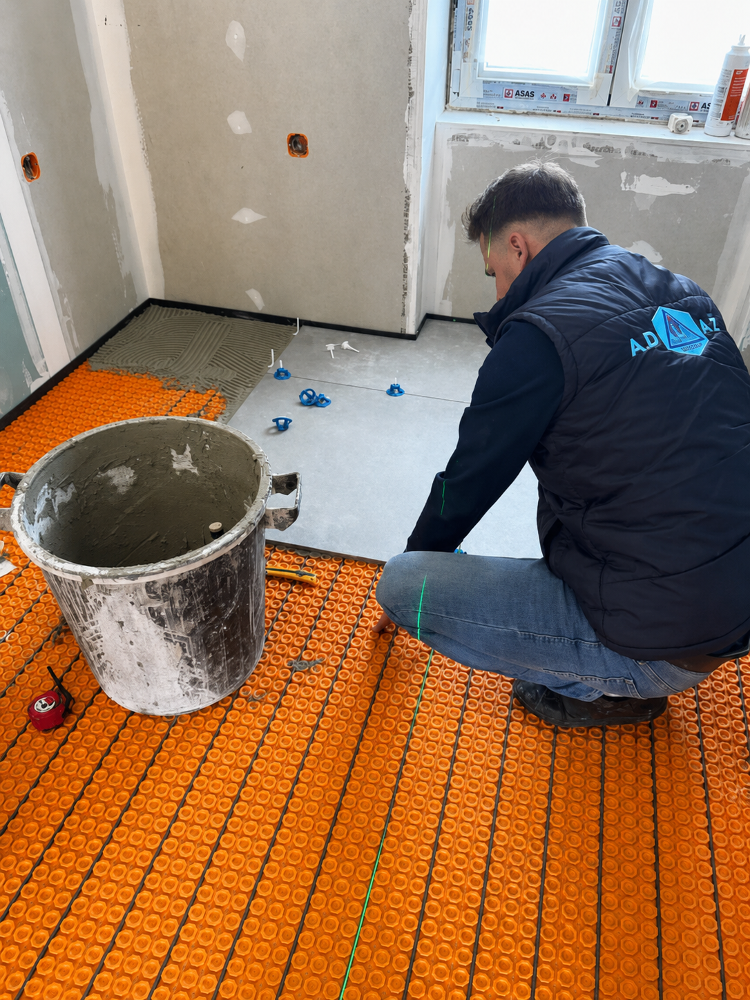
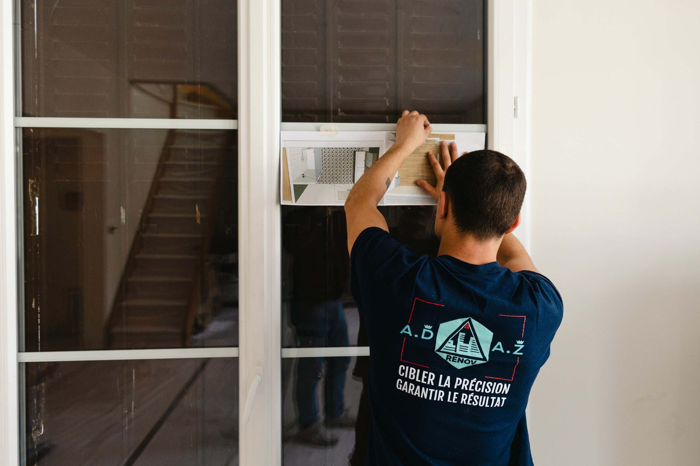

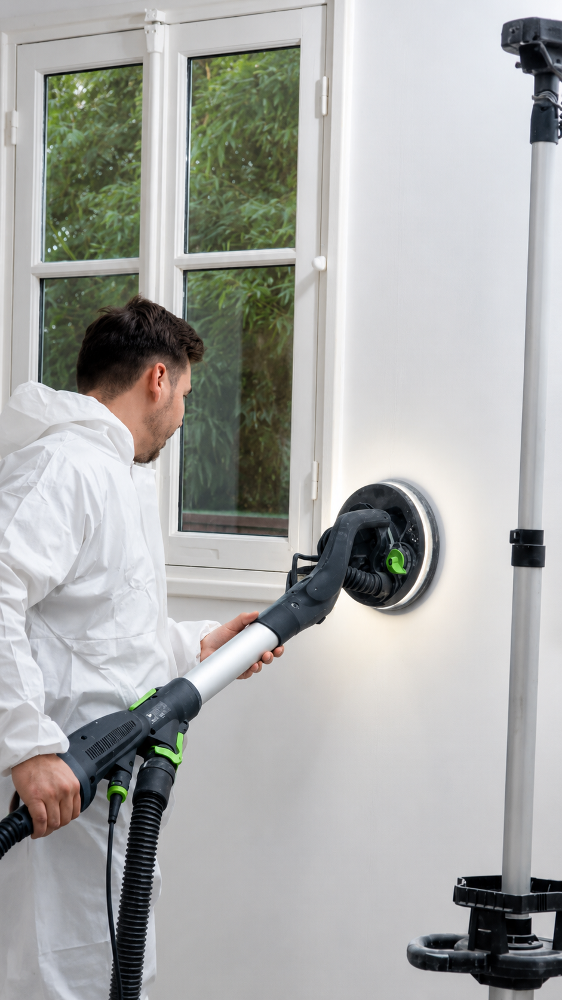

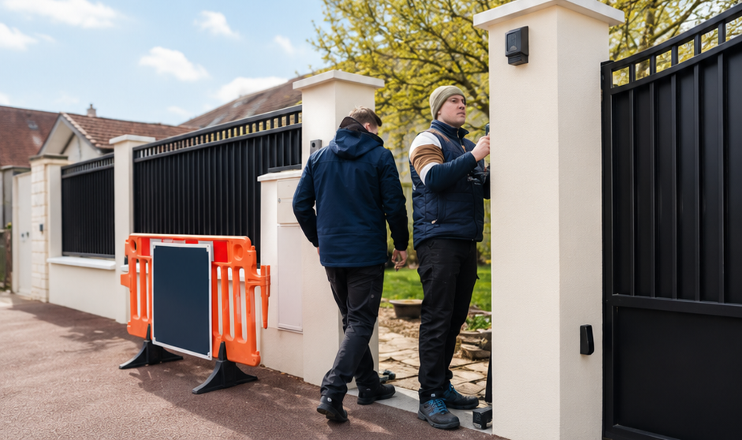
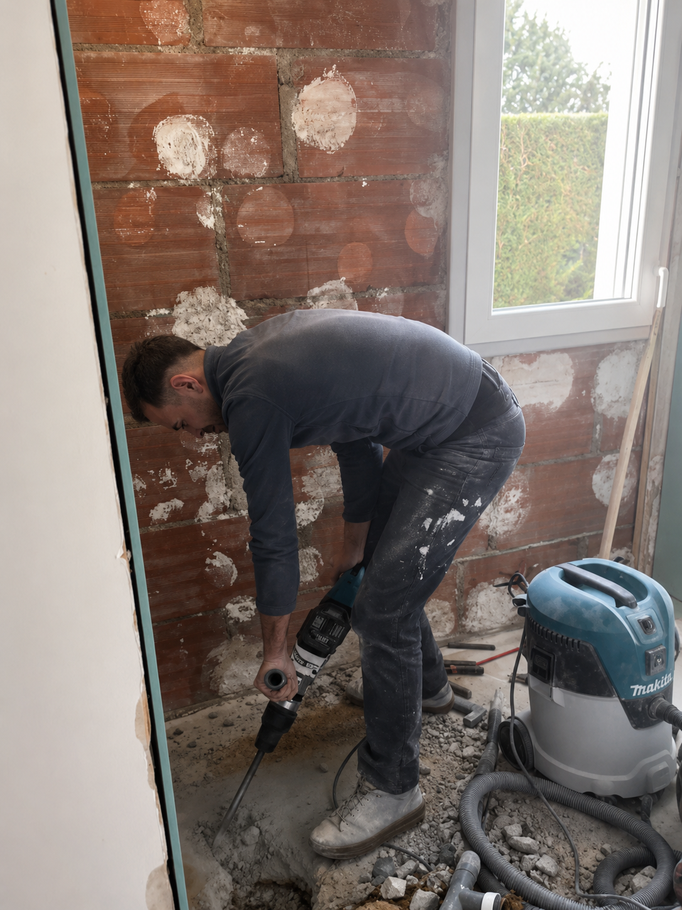
Nos valeurs
Ce qui guide chaque intervention
Une maniere simple de travailler : etre clair, soigneux et responsable.
01
Exigence
Nous cherchons un rendu propre, durable et coherent avec l'usage quotidien.
02
Transparence
Les choix, contraintes et delais sont expliques pour avancer sans confusion.
03
Coordination
Les etapes sont organisees pour que les differents metiers travaillent dans le bon ordre.
04
Respect
Respect du client, du logement, des supports existants et du chantier livre.
Parlez-nous de votre projet
ADAZ RENOV vous accompagne de l'idee au chantier livre, avec une equipe qui sait combiner conseil, technique et finition.
Ou appelez-nous au +33 1 86 04 74 68